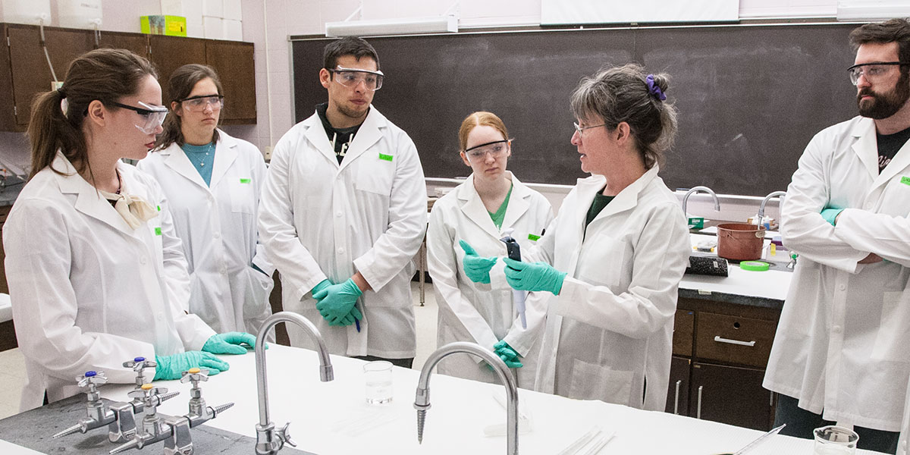
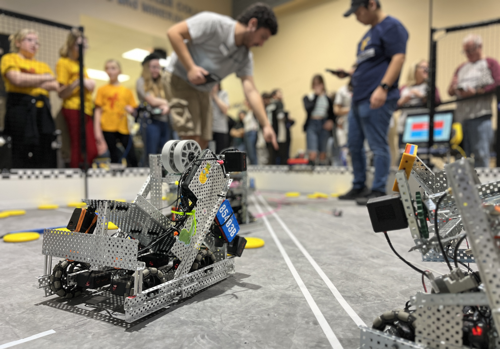

Tate College of Technology
The Tate College of Technology is known for its cutting edge curriculum that merges theory with intensive hands on practice in the computer science industry. Courses are structured around collaboration, problem solving, and creative prototyping.
Core Departments
- Computer Science
- Cybersecurity
- Game Development
- Web Development
- Information Systems
- Robotics
Events & Opportunities
Tate Hackathon
- A 48 hour hackathon with themes ranging from social good to machine learning.
- Corporate sponsors include Tesla, Google, and NVIDIA.
Robotics Showdown
- Robotics tournament with categories such as drone racing, autonomous pathfinding, and battle bots.
AppCraft Challenge
- A semesterly mobile app competition focused on solving local New York problems.
- Winning apps often get seed funding from local businesses and investors.
GreenTech Innovation Expo
- Students prototype and pitch sustainable technologies judged by industry green tech leaders.
- Top prototype has the opportunity to go into mock production.
Staff & Innovators
- Dr. Kaia Moreno — Dean of Computer Science Research
- Prof. Elias Boone — Head of Robotics Lab
- Dr. Anika Javed — Cybersecurity Chair
- Dr. Ryker Tan — Game Development Head
- Prof. Luna Mehta — Green Tech Visionary